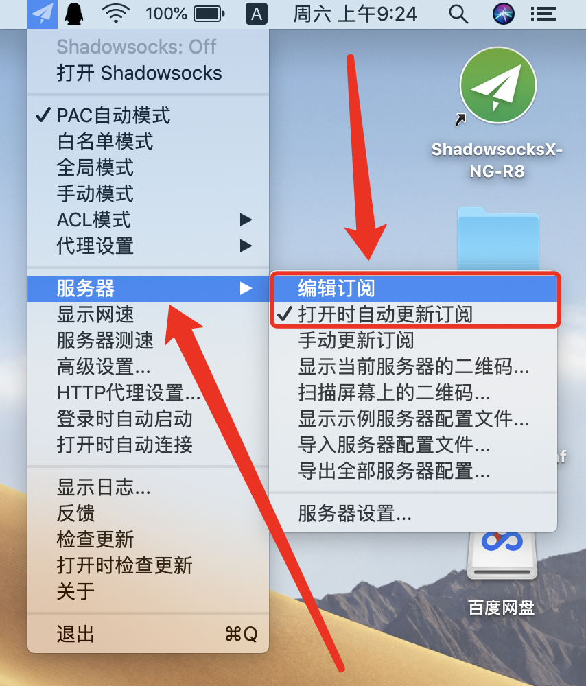
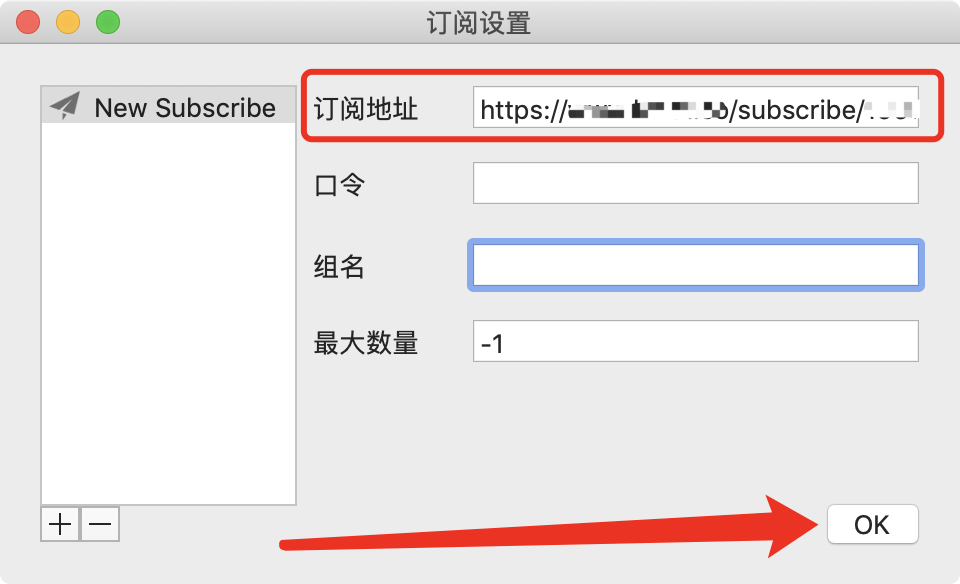
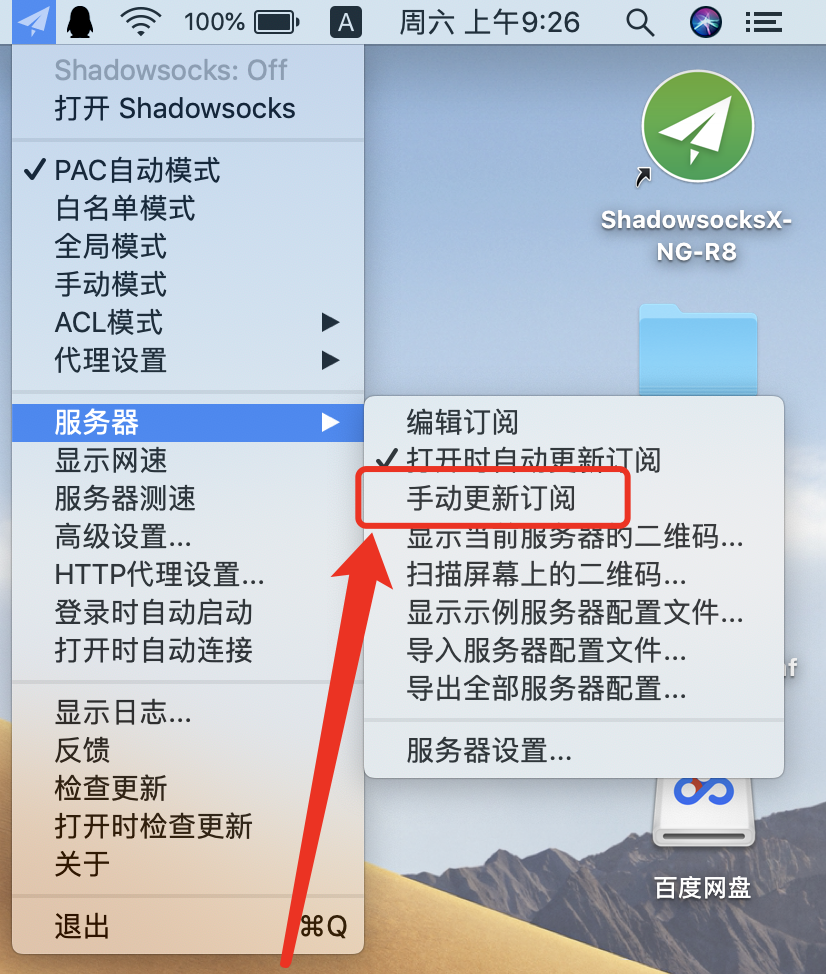
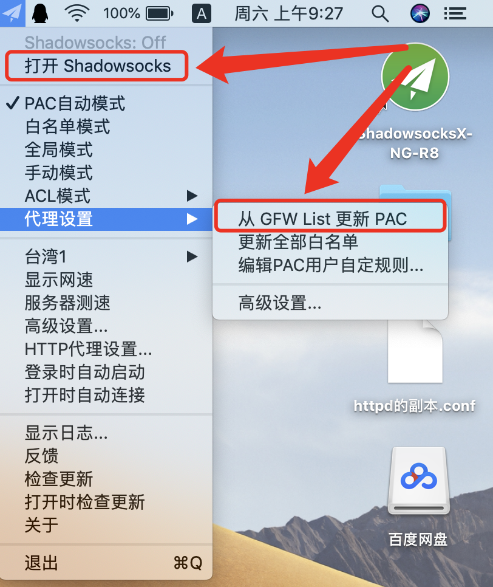
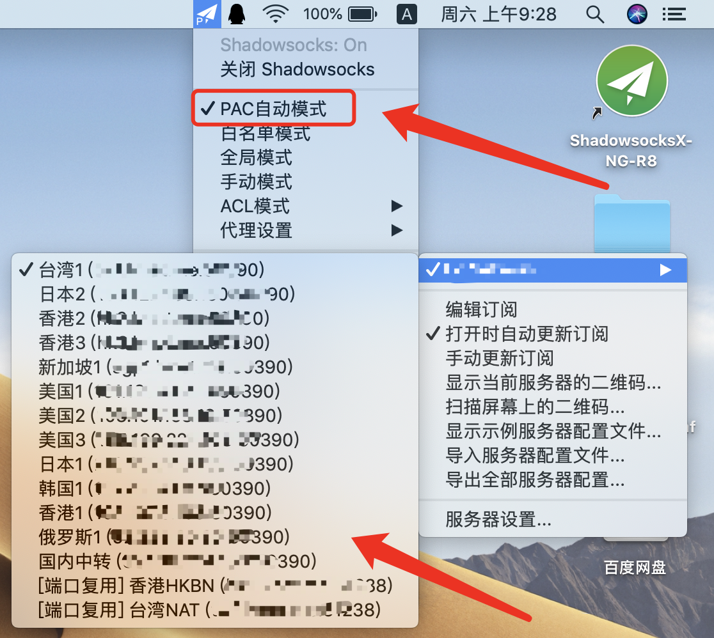

此步骤不演示，下载地址请点击上方导航栏的《下载中心》。
如下图所示，右键点击顶部的小飞机图标，选择《服务器》-> 《编辑订阅》
如下图所示，点击左下角的 《+》符号，然后将您复制好的订阅链接，粘贴到《订阅地址》栏目框中，点击《OK》
如下图所示，右键点击顶部的小飞机图标，选择《服务器》-> 《手动更新订阅》，并且可以打开上方的《打开时自动更新订阅》
如下图所示，右键点击顶部的小飞机图标，首先点击《打开Shadowsocks》，然后选择《代理设置》-> 点击《从GFW List更新PAC》
如下图所示，右键点击顶部的小飞机图标，最后点击《PAC自动模式》，并且您可以在《服务器》下看到所有的节点，可以自行选择其他节点来使用
请注意，小飞机一定要记得，首先点击《打开Shadowsocks》，看到上面灰字显示：Shadowsocks:On，才是开启了代理，如果开启后依旧不正常，请切换节点！